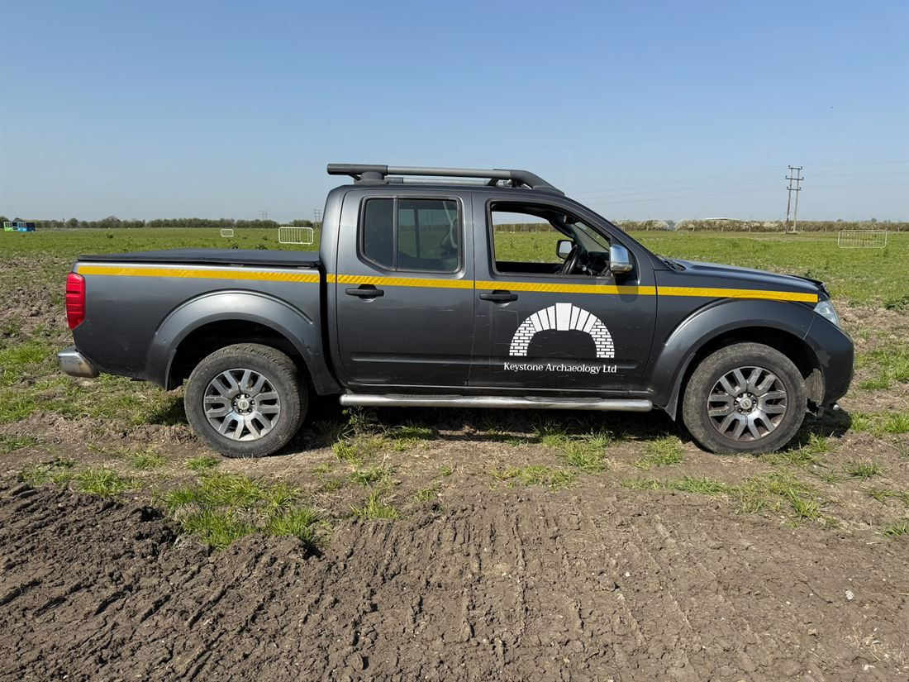
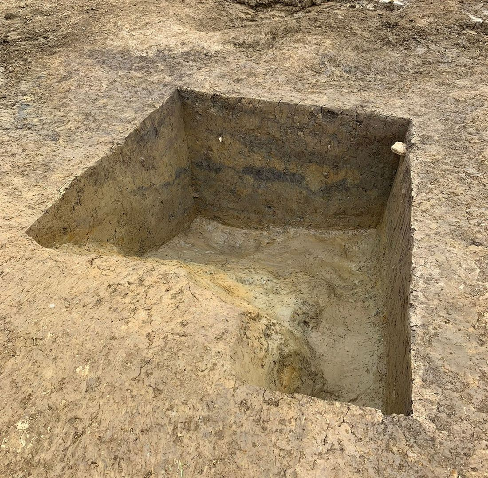

Based in Bicester, Oxfordshire, Keystone Archaeology is a professional archaeological services company, providing experienced and reliable field archaeologists, supervisors, and project officers to projects across England and Wales. We are committed to delivering high-quality archaeological support, supplying skilled personnel who integrate seamlessly with project teams and maintain the highest standards of professionalism, safety, and efficiency.

Founded in September 2024 by Directors Nicholas Dugan
and James Fish, Keystone Archaeology was established
to provide dependable, experienced archaeological professionals to support projects of all sizes.
Since our formation, we have worked alongside many of the UK's leading archaeological organisations,
contributing to a diverse range of projects—from small-scale evaluation trenches to large-scale
mitigation and infrastructure schemes. We pride ourselves on building strong working relationships
with our clients by supplying knowledgeable, hardworking archaeologists who consistently deliver
high-quality results.
When you choose Keystone Archaeology, you can expect experienced professionals who are committed to delivering work accurately, efficiently, and to the highest industry standards. We understand the importance of reliability, clear communication, and maintaining project schedules, ensuring every member of our team makes a positive contribution from day one.

Keystone Archaeology provides experienced personnel for all aspects of archaeological fieldwork.
Whether you require
individual specialists or an entire field team, we can supply qualified professionals at every
level, including Field
Archaeologists, Supervisors, and Project Officers.
Our staff possess a broad range of practical skills and experience, including: